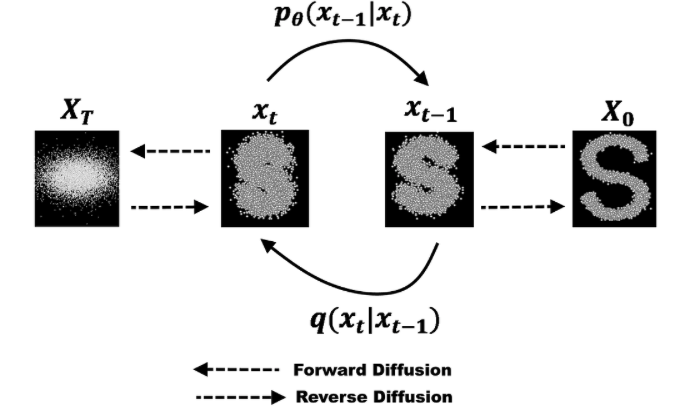
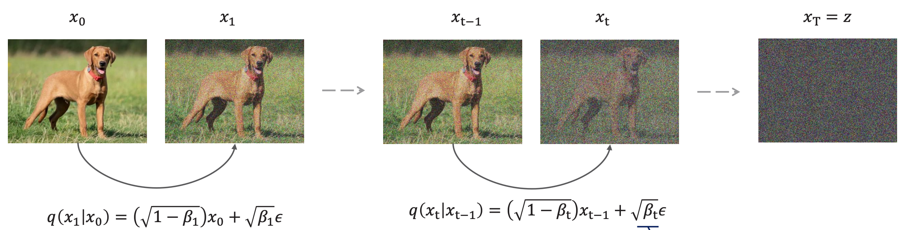
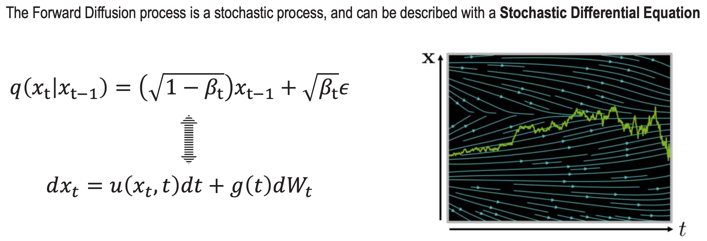
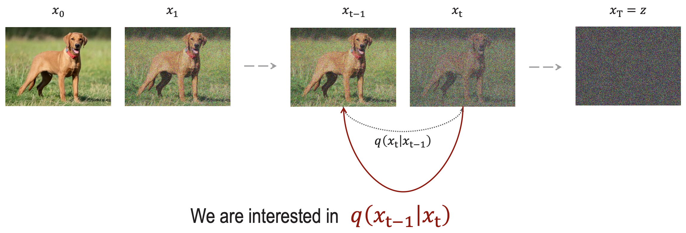
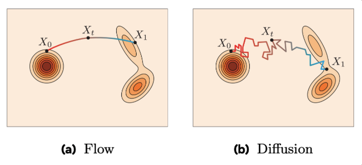
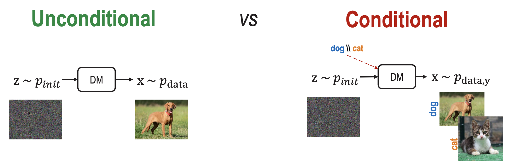
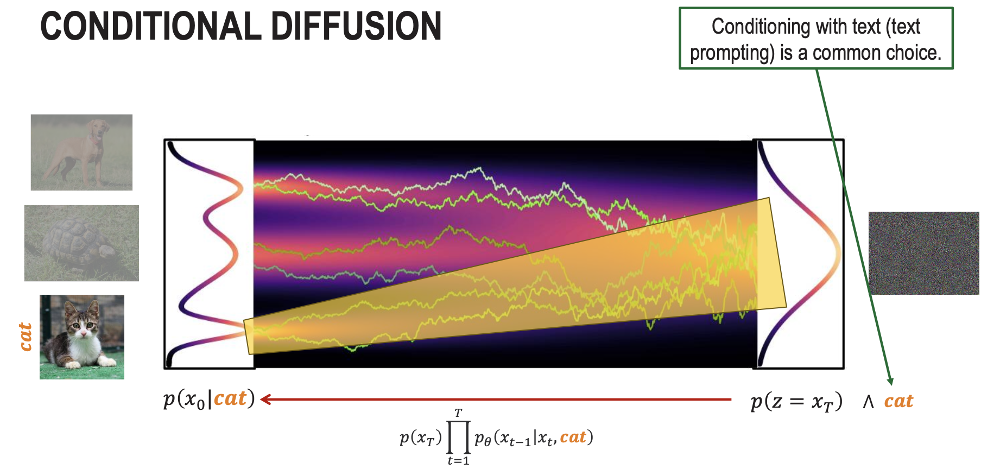
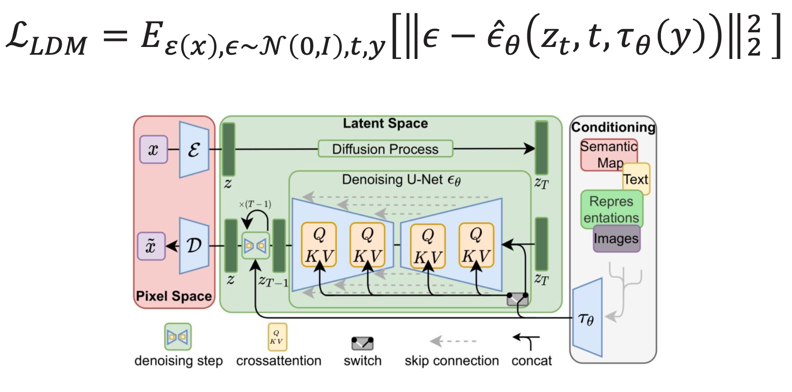
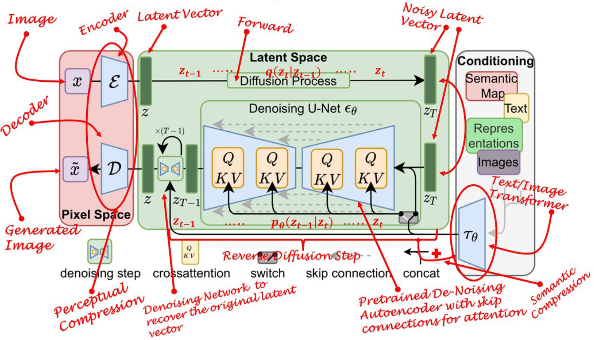

Add noise gradually and learn to reverse the process
which can also be interpreted as

Denoising Diffusion Probabilistic Model (DDPM)
DDPMs are a class of generative mode where the output generation is modeled as a denoising process, often called Stochastic Langevin Dynamics.
Looking at the figure above, it’s really only a 2-step process:
- A fixed (or predefined) forward diffusion process q that adds Gaussian noise
- A learned reverse denoising diffusion process
1. Forward Diffusion Process in DDPM
In the forward diffusion process, for each timestep t, we add unit Gaussian noise to the previous sample to produce :
- is the Identity Matrix
As a condition probability, this is written as:
or in general form:
- is the variance of the noise
- is the mean
So basically, Forward Diffusion is a Markov Chain.

Why ?
Apparently, this is to ensure that the total variance remains 1. This shows that using ensures that remains unit gaussian. The fact that and are independent, allows the variances to sum.
Variance Schedule
does not have to be constant at each time step, we actually define variance schedule, .
- it’s quite similar to the ideas behind Learning Rate
- Can be linear, quadratic, cosine, etc.
Forward Diffusion is a Stochastic Differential Equation

2. Denoising Process
Now, let’s say we want to reverse the process. We know how is calculated. So we want to get .
We know from Bayes Rule that
- From all this, we don’t know . That is the thing we want to predict.
Apparently, the solution is to always slap a universal function approximator, aka neural network
- The neural net learns two parameters: and
In the original paper
They only made the neural net learn , and fixed the variance.
We will also assume in this course that the variance of the (to be) removed noise is also diagonal.

The reverse process is also a Markov Chain:
Formulating the loss function
We go from the forward pass
to the generative pass
And so we formulate the loss function as:
How do we formulate the objective function for the neural net to learn?
We use U-Net (page incoming)
Flow matching vs. Diffusion?
The image kinda says it all.

Diffusion:
- Stochastic models: given a noise sample, it generates diverse samples (many trajectories),
- Gradually destroys a data point over time by progressively adding Gaussian Noise,
- Trains by estimating the added noise at step t (to be removed to obtain the sample at t-1),
- Needs many step for generation.
Flow:
- Deterministic model: given a noise sample, it generates a specific sample(single trajectory),
- The forward process is a linear interpolation of the data point and noise sample,
- Trains by minimizing the difference between an estimated and ground truth (Euler) velocity,
- Generates in many less steps than DMs.
Conditional Diffusion

The reverse process becomes

Classifier Guidance and Classifier-Free Guidance
Sources: Ho and Salimans, 2021 — Classifier Free, Song et al., 2021 — Classifier Guidance, Diffusion models beat gans on image synthesis, meta guide, page 33
Make sure you cover this part
Latent Diffusion Model (LDM)
You go through decoder, do diffusion in latent space, and then decode that.
- The idea is that diffusion is a very expensive process, but encoding / decoding is much faster
The paper covering this is High-Resolution Image Synthesis with Latent Diffusion Models.
Being likelihood-based models, they do not exhibit mode-collapse and training instabilities as GANs and, by heavily exploiting parameter sharing, they can model highly complex distributions of natural images without involving billions of parameters as in AR models
To stage training:
- Train an autoencoder to encode images in latent space
- Train diffusion to predict in latent space
Be predicting in latent space, we can reduce the computational load.
So what I should remember is that:
- The diffusion and denoising are done on a compressed (lower-dimensional) version of the samples

I love when professors do charity work:

Some applications where we want to use diffusion models:
- text-to-image generation
- image editing and composition
- visual illusions
- novel view synthesis
- policy generation in robotics
- video generation
- …